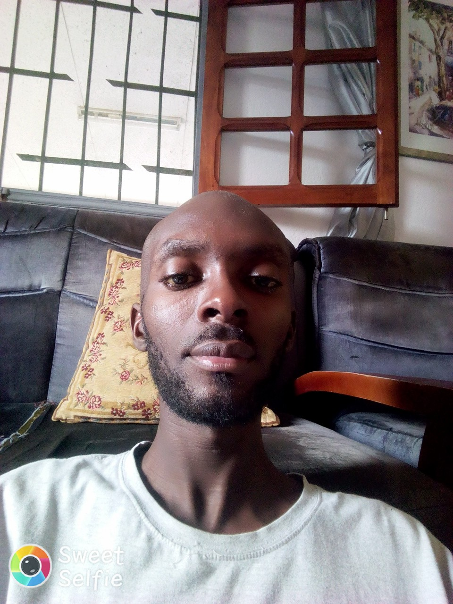
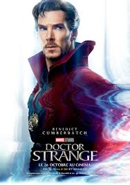

Mes coordonnées:
Ci joint à mes coordonnées une de mes photos
| Nom de l'établissement | Diplome obtenu | Année d'obtention |
|---|---|---|
| CES mindoubé | BEPC | 2004 |
| Collège Saint Gabriel | BAC | 2007 |
Voici une brève vidéo de ma présentation
Je suis Farrel BATY KOUIMA, né le 21/12/1987 à Libreville, de parents gabonais. Ceux qui me fréquentent au quotidien disent de moi que je suis avenant, généreux, sympa, capricieux, éxigeant et plein d'autres choses. Je me définis moi meme juste comme quelqu'un de simple et de persévérant. Cette seconde qualité est pour moi essentielle non seulement par rapport à la vie en général, mais aussi à ma vie personnelle en particulier. Je n'aurais jamais pu faire face à certains écueils sans la persévérance.
Mon héro préféré s'appelle Docteur Strange. Un des membres de la famille des avengers. Il est maitre du temps. C'est de là que vient mon admiration pour ce personnage. Le temps est une donnée insaisissable. A bien des égards, il a toujours une emprise sur nous et cela, quoique nous fassions. Le maitriser est à mon sens le plus grand des pouvoirs.
Ma chanson préférée est heal the world de Michael Jackson. Guérir le monde, en faire un meilleur endroit ou il fait bon vivre. Cela prend tout son sens aujourd'hui, à la lumière de tout ce qui se passe dans le monde.